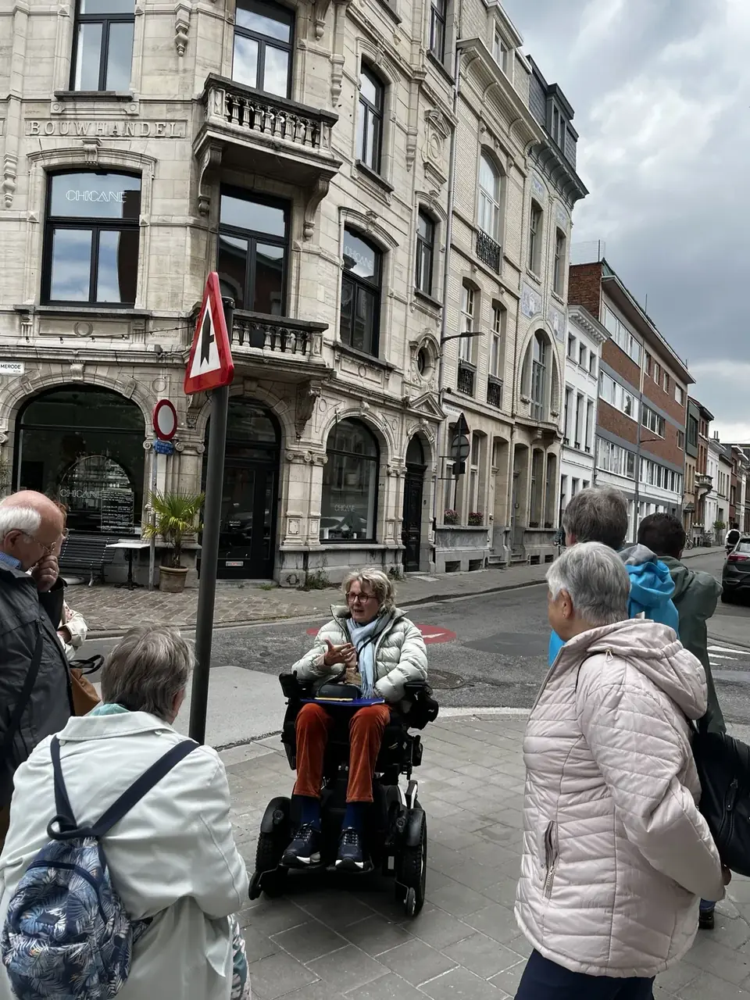
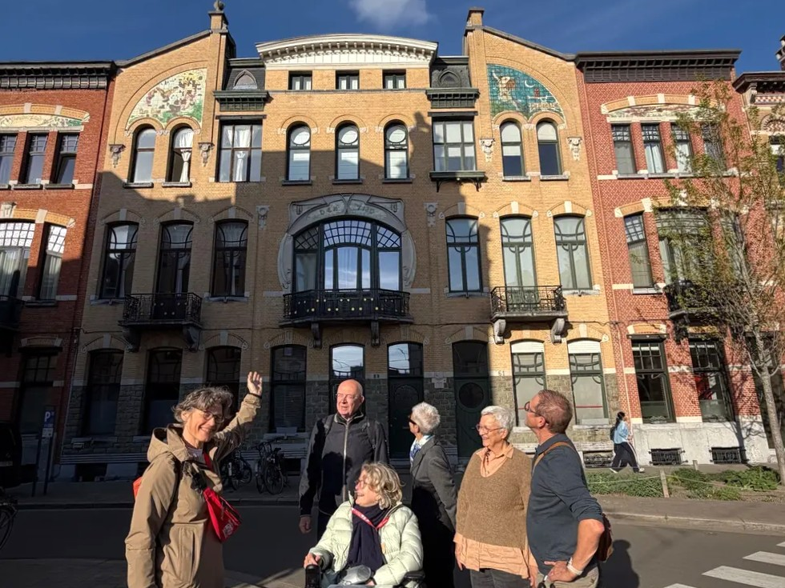
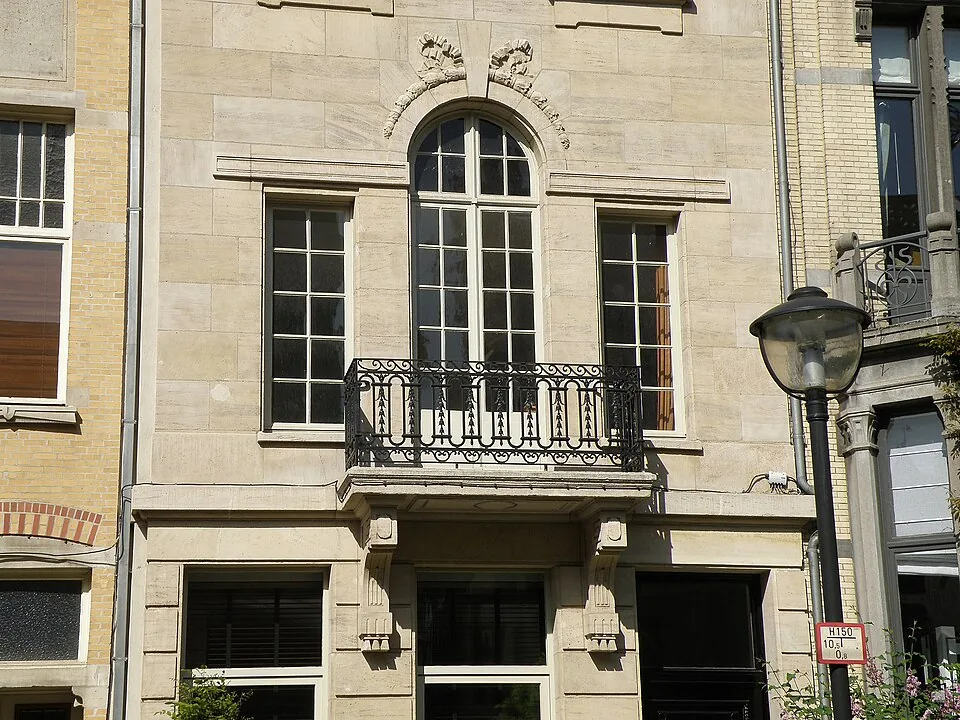
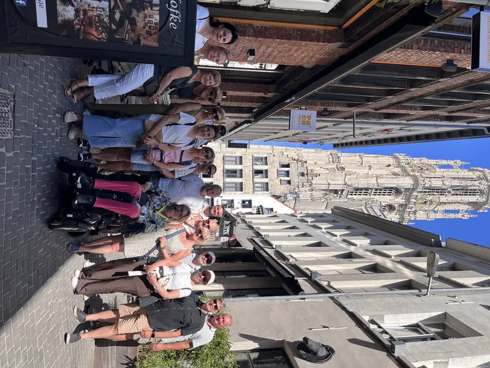

Fake news tour Antwerpen
Straffe verhalen, slimme misleiding en verrassende waarheden. Aan jou om feit van fictie te onderscheiden.
Bekijk detailsStads- en museumrondleidingen
Marie-Hélène neemt je mee langs kunst, architectuur, erfgoed en details die je anders voorbijloopt, helder verteld en afgestemd op jouw groep.

Van onverwachte stadsverhalen tot kunst en erfgoed. Kies een bestaande rondleiding of vraag een formule op maat.
Straffe verhalen, slimme misleiding en verrassende waarheden. Aan jou om feit van fictie te onderscheiden.
Bekijk details
Exuberante gevels en verhalen met een hoek af. Ontdek welke anekdotes kloppen en welke nét te mooi zijn.
Bekijk details
Kijk met meer aandacht naar de kunst, geschiedenis en symboliek van dit monumentale Antwerpse icoon.
Bekijk details
Ontdek een verrassend Berchem vol lokale verhalen. Welke feiten kloppen en welke zijn bijzonder goed verzonnen?
Bekijk details
Een toegankelijke kennismaking met de mooiste plekken, markante figuren en historische verhalen van Antwerpen.
Bekijk details
Ontdek hoe kunstenaars anders kijken naar de wereld en laat hedendaagse kunst nieuwe vragen oproepen.
Bekijk details
Uitgelicht
Laat je verrassen door de architectuur van Zurenborg en verhalen waarbij niets helemaal vanzelfsprekend is. Wat klopt, wat niet, en wat blijkt nog straffer dan de fictie?
Ontdek deze tourMarie-Hélène neemt je mee langs de mooiste plekken van Antwerpen, laat je unieke architectuur ontdekken en brengt de geschiedenis van de stad tot leven met verrassende, soms grappige verhalen. Ook wie Antwerpen al kent, kijkt na afloop met andere ogen.


Samen iets bijzonders beleven
Plan je een teambuilding, familiefeest, schoolactiviteit of dag met vrienden? Vertel wat je zoekt. Marie-Hélène stelt een rondleiding voor die past bij jullie interesses, tempo en gelegenheid.
Bespreek je idee